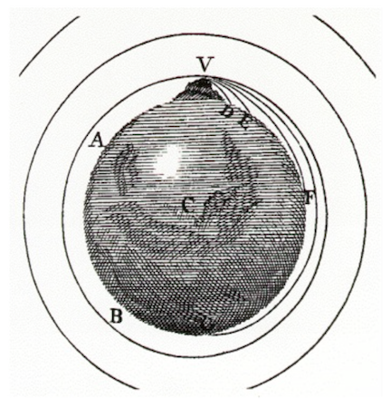
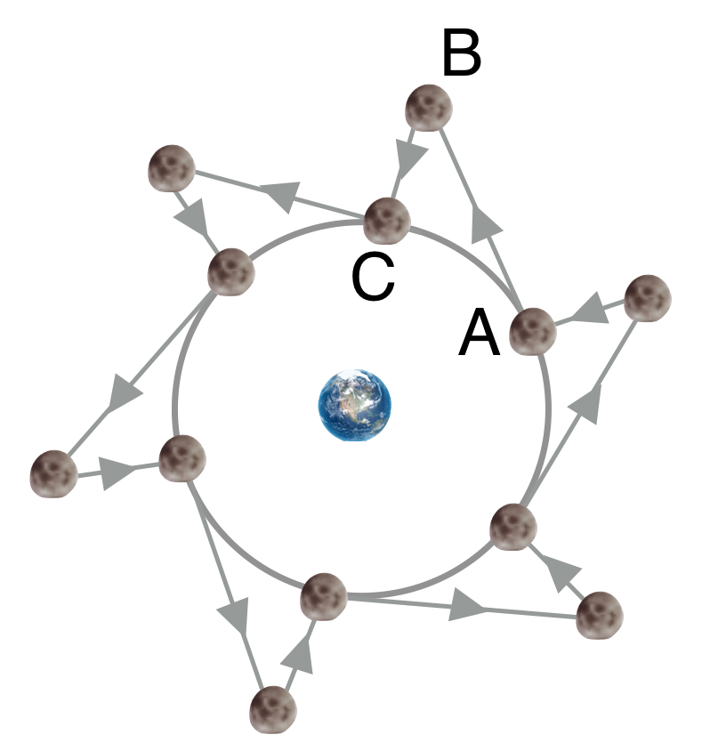
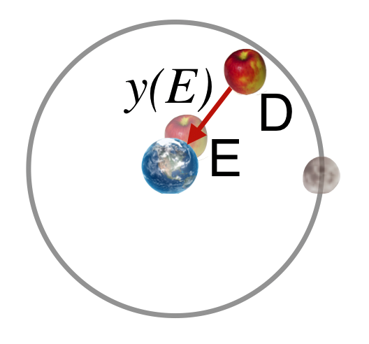

10.3. The Apple Moment: Newton’s Gravity#
Suppose you could go to a mountain and shoot a cannonball horizontally, like Galileo’s table-top. If you were to increase the charge so that the cannonball is given more and more horizontal velocity…it would go further and further and eventually – it misses the ground. The figure below is from the Principia is perhaps the most fanciful thing that Newton ever depicted. He surmised that if given enough velocity the cannonball would continue to “fall” around and around: it would go into orbit. This is a part of the famous idea that transformed physics forever. Yes, the Apple.
{kind=link}

the apple changed everything What I’m about to describe arguably changed not only natural science, but was the catalyst for the idea that not only science, but reason was the path to knowledge and progress. Everything we know today as how to think, how to govern, and the role of rationality in deciphering how the world works arguably stems from the “Age of Reason” the Enlightenment born in the optimism of the Newtonian synthesis.
There’s no way to overstate the importance of Newton’s Gravitational law. It made precise predictions about a number of physical phenomena, which were tested and shown to be confirmed. The very idea that a model of the universe would be quantitative and that predictions would be worth testing was itself a new idea.
Before Newton there was superstition. After Newton, there was science. Gravitation was the reason. The Aristotelian view disappeared. Ptolemey’s model disappeared. The solar system and the Sun’s rightful place was established, not to be unseated again.
There was the complication of Tycho’s model (remind yourself in Lesson 9) of the solar system which held the Earth stood still and the Sun revolved around it and the other planets revolved around the Sun. It’s geometrically the same as the Copernican model with the assumption that the Earth stands still. The stellar aberration observations necessary to show that the Earth really does move and that Tycho’s model was not correct waited until the early 1800’s when telescopes were finally precise enough.
During the 17th century the rules governing celestial objects were supposed to be different from those on Earth. Copernicus didn’t question this. Kepler hinted at a common set of rules. Galileo didn’t go there. And Newton was taught a full dose of Aristotle at Cambridge (which students rebelled against by secretly reading Descartes). But somehow he – unlike anyone before him – imagined that there was only one set of rules that governed Earth-bound and celestial objects. And he, first among all, figured out how to make a model and test it.
When he was at the farm during the plague he had a number of remarkable ideas, among which one presumably came from the apple story. There was (and still is) an apple tree at his childhood home and he surely watched many lose their grip and fall to the ground. There is one account of this famous story from his first biographer, William Stukeley describing a dinner he and the great (now old) man enjoyed in 1726:
“After dinner, the weather being warm, we went into the garden & drank tea under the shade of some apple tree; only he and myself…Amid other discourse, he told me, he was just in the same situation, as when formerly the notion of gravitation came into his mind. Why should that apple always descend perpendicularly to the ground, thought he to himself; occasioned by the fall of an apple, as he sat in contemplative mood.
Why should it not go sideways, or upwards? But constantly to the Earth’s centre? Assuredly the reason is, that the Earth draws it. There must be a drawing power in matter. And the sum of the drawing power in the matter of the Earth must be in the Earth’s centre, not in any side of the Earth.
Therefore does this apple fall perpendicularly or towards the centre? If matter thus draws matter; it must be proportion of its quantity. Therefore the apple draws the Earth, as well as the Earth draws the apple.”
There it is. That’s the story. Further, if the Earth has “drawing power,” maybe whatever it is about the Earth that draws an apple to the ground might also pull on the Moon. How much? Galileo thought that the force of the Earth on objects would be constant everywhere, but Newton guessed that it was not…that it should be diluted as one moves away from the Earth. He guessed (and later showed mathematically) that it could be presumed to be the center of the Earth.
He had to assume that the Moon moves in a (near) circle around the Earth. And he had to presume that the same rules governing objects moving in a circle on the Earth would hold for the Moon. He (privately in 1666) and Huygens (publicly in 1659) demonstrated mathematically that a centripetal acceleration must be pulling to the center and have the form \(v^2/R\). Maybe that causal force—the centripetal force—is the one and same force that attracts the apple. Hmm?
Wait. So did the apple hit his head as we’re all taught?
Glad you asked. He never made mention of it, so it’s another fable told by supporters later. Did Washington cut down the cherry tree? Does fresh fruit always figure into Great Person Myths?
With this set of ideas, he’s way outside of the normal way of thinking. He’s violating Aristotle’s principles and he’s violating his hero, Descartes’ principle of reasoning from first principles. He’s going to work out the consequences of such a guess, without first identifying the original cause.
Here’s what he wrote of his summer many years later:
“I began to think of gravity extending to the orb of the moon & (having found out how to estimate the force with which a globe revolving within a sphere presses the surface of the sphere) from Kepler’s rule of the periodical times of the Planets being in sesquialterate proportion of their distances from the center of their Orbs, I deduced that the forces which keep the Planets in their Orbs must be reciprocally as the squares of their distances from the centers about which they revolve & thereby compared the moon in her Orb with the force of gravity at the surface of the earth & found them answer pretty nearly.””
What’s he saying here? (I’ll bet you didn’t know that “sesquialterate” means “…in a ratio of one and a half to one.” Neither did I.)
There’s some context here that’s fun. Remember in Lesson 6 the description of the challenge brought to him from Edmund Halley, Robert Hooke (his nemesis), and Christopher Wren? The question was: if the force of attraction of the Sun varied like the inverse-square of the distance, what would be the shape of the orbit? Newton answered, “an ellipse…because I have calculated it.” But he couldn’t find the calculation and Halley had to wait? Remember? This is the essence of what Halley received in those nine pages from Isaac Newton. And the beginning of…well, everything.
10.3.1. How to Support a Moon In Its Orbit#
What’s coming in the next few paragraphs is the very definition of “game changer” and you know enough to be able to enjoy it with me. Let’s develop the most important physics chapter in the book of western science, step by step.
Newton’s mental picture of rotational motion – like the Moon orbiting the Earth – was one of a jagged motion like this:
{kind=link}

Fig. 10.4 The Moon travels in a straight line for a bit (like AB), obeying his first law, then it’s tugged back by the Earth’s attraction (like BC) then travels in a straight line a bit…and so on all the way around.#
Remember, by this point he’s got the germ of calculus in his mind so this jagged motion should approximate a circle when the little triangles get smaller and smaller. Picking out one of them labeled ABC, the AB length gets smaller and so the BC length gets smaller…keep making them smaller and the end result is that the BC length becomes zero and the AB lengths become infinite in number and a perfect circle results.
It’s this BC motion that interested him. That’s “falling” for him.
Wait. But isn’t there a force that keeps it moving in a circle. Where did that come from?
Glad you asked. Good question. If the Moon were just placed some distance from the Earth, it would start to accelerate towards the Earth (and the Earth toward it). But that’s not how the Moon was formed, rather it had some circular motion before it coalesced into the object we now see in orbit. Now Newton didn’t have a clue about the formation of the Moon (it’s even a question of active research today). But if you grant that the Moon was initially moving by the Earth and was captured by it, then you’d get the same picture as you would if it were just falling, where now that “fall” is the BC leg of this jagged journey.
Models of the formation of the Moon have settled into basically the following story, the “Giant Impact Argument.” Not long after the Earth was formed…around 4.5B years ago…a rogue tiny-panet (it’s got a name: Theia) crashed into the infant proto-Earth in a highly energetic collision sufficient to eject tons of material into orbit. The collision might have been oblique, accounting for the 23.5 degree inclination of Earth’s axis of rotation relative to its orbital plane. Common nuclear composition between material deep underground on Earth and the Moon’s surface support this, as does the fact that the Moon orbits the Earth coplanar with the Earth’s equator. This collision would have created an Earth-day that was less than a quarter of our beloved 24 hour period. There are still other models, but this is the favorite right now. So the Moon’s tangential, orbital motion is a result of conserving angular momentum from the off-center Earth-Theia collision in which material from both became the Moon’s composition.
What he reasoned was that when an apple falls to Earth from a branch, that the same force that causes it to fall directly down is the same force that causes the Moon’s BC motion. The Moon is successively falling as it goes around the Earth, and just missing the edge of the Earth as it does so. It’s precisely the cannon shot picture. The cannon ball falls but eventually misses and at that point it’s in orbit. I hope you can see how he quickly applied that to the Moon.
So he knows the acceleration on the Earth for the apple. If he timed an apple’s fall for, say 1 second, he could calculate how far that would be – Galileo essentially told him. The figure shows the situation, and what we want is the distance from D to E, \(y(E)\) for “Earth.”
{kind=link}

It’s simply:
Remember that distance for the apple: 16 feet, or 4.9 meters in 1 second.
Now he considers the Moon’s fall. He knows quite a bit about the Moon’s motion as you’ll see. He wants to calculate how far the Moon falls in 1 second. That is, from the jagged figure above, what is that distance BC for a 1 second “Moon drop”? Seems hard to imagine, doesn’t it. Don’t underestimate Isaac Newton, he’s clever and he’s got a friend: he knew Kepler’s Third law. Let’s see how that guides him.